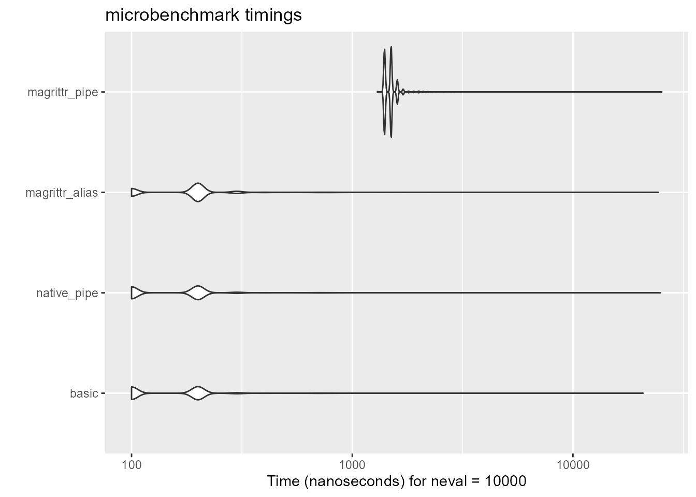
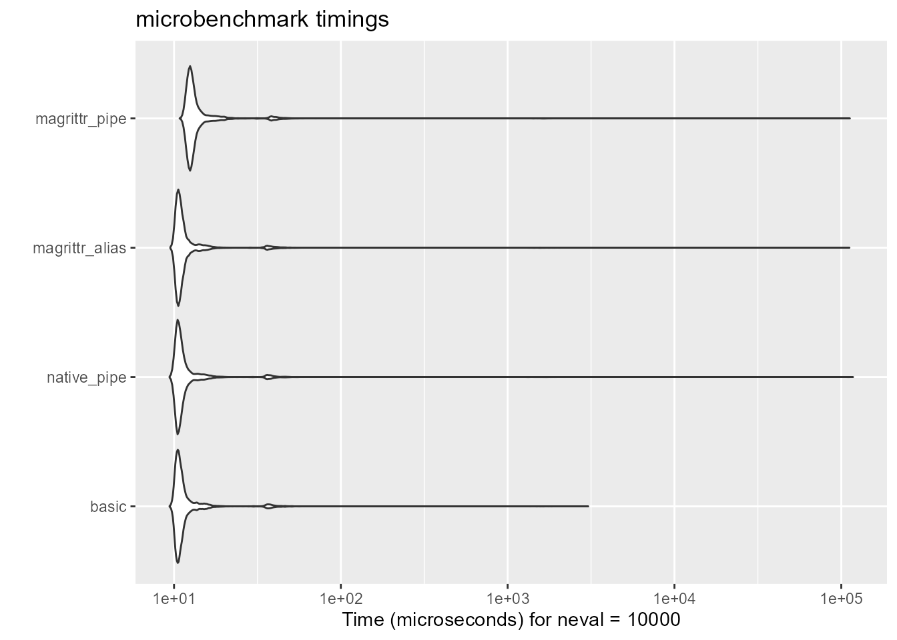

Packages
Contents
Problem
R 4.1以降で使えるようになった組み込みのパイプ演算子|>。ネイティブパイプと呼ばれているこのパイプ演算子ですが、tidyverseでおなじみのmagrittrパイプ演算子（%>%）より機能が制限されていることは有名です。詳しくはhelp("|>")やHadley氏の解説記事1を見てください。
制限されていることの一つとして、help("|>")だとこう書いてあります。
To avoid ambiguities, functions in rhs calls may not be syntactically special, such as + or if.
ネイティブパイプの右辺では+やifのような関数が特別扱いを受けません。つまりこういうことです。
Error in !NULL: function '!' not supported in RHS call of a pipe (<input>:1:42)算術演算子（+, -, %%, etc…）や関係演算子（<, !=, etc…）、NOT（!）などがすんなり使えません。こういう演算子はバッククォートで囲むと大体OKだったりするのですが、パイプフローだとそうはいかないようです。
ちなみにmagrittrパイプだとできます。
[1] 3 4 5[1] 3 4 5[1] TRUE TRUE FALSE FALSE FALSE[1] FALSE TRUE NA FALSE TRUE FALSEそういう演算子使うときはパイプ使って書かなくていいじゃんとか、magrittrパイプ使えばいいじゃんとか思うかもしれません。ですが、パッケージの読み込みなしでそのまま使えたり、最近はmagrittr側が高速化しているとはいえネイティブパイプの方が速かったり2と、ネイティブパイプ使用にもメリットはあります。特にモンテカルロシミュレーションを時々やる身としては、少しでも速い方がいいのです。あと私はネイティブパイプerなので、途中でmagrittrパイプが混じるのは個人的にはなんかちょっと統一性がなくてあまり好みではありません。あと、R for Data Science 2nd ed.ではネイティブパイプの使用を推奨していますし3。
というわけで前からちょくちょく調べたり考えたりしてました。↓
Rの備忘録
— Takuto SAKAI (@tsakai_psych) December 30, 2025
native pipe のpipelineでの論理値の反転が、|> (!) () という記法で通るらしい
どういうことなのかよくわからないhttps://t.co/RlqVIhuqnJ pic.twitter.com/BCpjYWhsns
個人的には、無名関数も()によるラップも、()や{}が増えて何となく可読性が下がるような気がしてもやもやしています。（と言いつつ、普段は無名関数をバンバン使っています。）
Solution
それで、このあいだhelp("groupGeneric")とにらめっこしていろいろ試していたら、なんか通る書き方がありました。
[1] 3 4 5[1] TRUE TRUE FALSE FALSE FALSE[1] FALSE TRUE NA FALSE TRUE FALSEどうやら第一引数名＋プレースホルダー（e1 = _）で通るようです。ネイティブパイプでは第一引数以外に値を渡したいときに引数名が必要だというルールがあるのですが、これらの特別な演算子だとどうやら異なるようです。
とりあえず、Opsグループの演算子のすべてで試します。
Arithmetic operators
- 足し算
- 引き算
- 掛け算
- 割り算
- 累乗
- Mod計算
- 商の計算
Logical operators
- AND
- OR
- NOT
- なお
!は単項演算子（unary operator）なので、第一引数xに対してプレースホルダーを置くだけでいいです。引数名がxなのは後述します。
- なお
Relational (comparison) operators
- equal
- not equal
- less
- greater
Matrix products
- 行列の掛け算
Arguments name
二項演算子の引数名については、help("groupGeneric")に倣い、また、演算子を呼び出してみると以下のように出力されるのもあって、(e1 = _, e2 = y)の書き方をしました。
ですが、どうやら引数名は何でもよいみたいですし、プレースホルダー側でなければ引数名がなくても通るようです。
[1] 3 4 5[1] 1 2 0 1[1] TRUE FALSE NA TRUE TRUE FALSE[1] TRUE FALSE FALSEちなみに、!は呼び出してみると以下のようになります。
引数名がxになっています。というわけで最初の例で挙げた書き方（e1 = _）の時点で実は引数名が何でもよいことになっていました。
magrittr aliases
ここまで書いておいて今更感があるんですが、実はこれらの演算子がパイプで使えるようにmagrittrパッケージではエイリアスが用意されています。例えば+はmagrittr::add()で書くことができます。中身も同じです。
その他の演算子についてはhelp("extract", package = "magrittr")で見れます。
[1] 3 4 5[1] 1 2 0 1[1] FALSE TRUE NA FALSE FALSE TRUE正直言うと、これらエイリアスを使った方がわかりやすさも可読性もがいいように思います。なお、tidyverseパッケージを使っている人であればmagrittrは必ずインストールされていますが、基本パッケージではないのでlibrary(tidyverse)だけでは呼び出し(::)なしで使えません。使いたい人はlibrary(magrittr)もついでにしてください。
Supplement
参考までに、足し算だけ処理速度の比較をしてみます。基本的な記法、ネイティブパイプ、magrittrエイリアス、magrittrパイプの4記法で比較です。ネタバレするとあまりにも速すぎるので、試行回数は1万回にしてもすぐ終わります。
Unit: nanoseconds
expr min lq mean median uq max neval cld
basic 100 100 184.02 200 200 20800 10000 a
native_pipe 100 100 184.02 200 200 24900 10000 a
magrittr_alias 100 100 207.64 200 200 24400 10000 b
magrittr_pipe 1300 1400 1515.64 1500 1500 25300 10000 c
この中だとmagrittrパイプだけが非常に遅いです。ちなみにキャッシュを使っていないので、レンダリングするたびにベンチマークの結果が変わるのですが（ネイティブパイプとmagrittrエイリアスに差があることになったりならなかったり）、magrittrパイプが遅いのだけは変わらないです。ただし、この結果の単位はナノ秒です。体感できる差ではありません。
ベクトルの要素を1万個まで増やして再度比較します。
Unit: microseconds
expr min lq mean median uq max neval cld
basic 9.4 10.4 15.63672 10.8 11.5 3042.0 10000 a
native_pipe 9.4 10.4 61.00143 10.8 11.5 117682.7 10000 a
magrittr_alias 9.5 10.5 28.25475 10.9 11.5 111963.6 10000 a
magrittr_pipe 10.8 12.2 30.34975 12.7 13.6 112676.1 10000 a
magrittrパイプの分布が若干他3記法よりも後ろにあるように見受けられますが、単位はマイクロ秒ですしこれも体感できる差があるとは言えないでしょう。
Conclusion
ネイティブパイプのRHSで特別な演算子を使ってみたという話でした。調べてもでてこなくて、最初見つけたときはすごくときめいた感じがしたのですが、これを書いている間にどんどん「だからどうした」感が出てたのと、なんでパイプラインで論理値反転したかったのかをすっかり忘れました。まあ、こういう書き方もできるよということで。
Session Infomation
Notesessioninfo
R version 4.5.2 (2025-10-31 ucrt)
Platform: x86_64-w64-mingw32/x64
Running under: Windows 11 x64 (build 26100)
Matrix products: default
LAPACK version 3.12.1
locale:
[1] LC_COLLATE=Japanese_Japan.utf8 LC_CTYPE=Japanese_Japan.utf8 LC_MONETARY=Japanese_Japan.utf8
[4] LC_NUMERIC=C LC_TIME=Japanese_Japan.utf8
time zone: Asia/Tokyo
tzcode source: internal
attached base packages:
[1] stats graphics grDevices utils datasets methods base
other attached packages:
[1] magrittr_2.0.4
loaded via a namespace (and not attached):
[1] Matrix_1.7-4 gtable_0.3.6 jsonlite_2.0.0 dplyr_1.2.0
[5] compiler_4.5.2 tidyselect_1.2.1 splines_4.5.2 systemfonts_1.3.1
[9] scales_1.4.0 textshaping_1.0.4 yaml_2.3.12 fastmap_1.2.0
[13] TH.data_1.1-5 lattice_0.22-7 ggplot2_4.0.2 R6_2.6.1
[17] labeling_0.4.3 generics_0.1.4 microbenchmark_1.5.0 knitr_1.51
[21] MASS_7.3-65 htmlwidgets_1.6.4 tibble_3.3.1 pillar_1.11.1
[25] RColorBrewer_1.1-3 rlang_1.1.7 multcomp_1.4-29 xfun_0.56
[29] S7_0.2.1 otel_0.2.0 cli_3.6.5 withr_3.0.2
[33] digest_0.6.39 grid_4.5.2 mvtnorm_1.3-3 rstudioapi_0.18.0
[37] sandwich_3.1-1 lifecycle_1.0.5 vctrs_0.7.1 evaluate_1.0.5
[41] glue_1.8.0 farver_2.1.2 codetools_0.2-20 ragg_1.5.0
[45] zoo_1.8-15 survival_3.8-3 rmarkdown_2.30 tools_4.5.2
[49] pkgconfig_2.0.3 htmltools_0.5.9